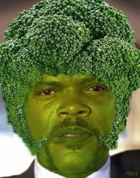

Brocolli and Chicken

2 Ingredient Health Meal
This simple dish will take you to the moon and back ont he brocolli train. Your friends and family will be GREEN with envy.
Ingredients
- Brocolli
- Chicken
- Salt
- Pepper
- Chilli Flakes
Method
- Cut up your Brocolli to the desired floret sizage and season with salt and chilli flakes, stick in the oven on 200 for about half an hour checking
every so often
- Cut up your Chicken, season with salt and pepper
- Stick the Chicken in the oven on a different rack for about the same time
- Get them out the oven, stick then in a bowl and douse with hot sauce
Recipes